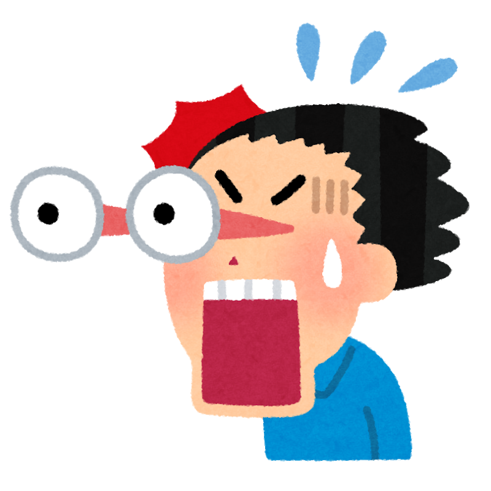
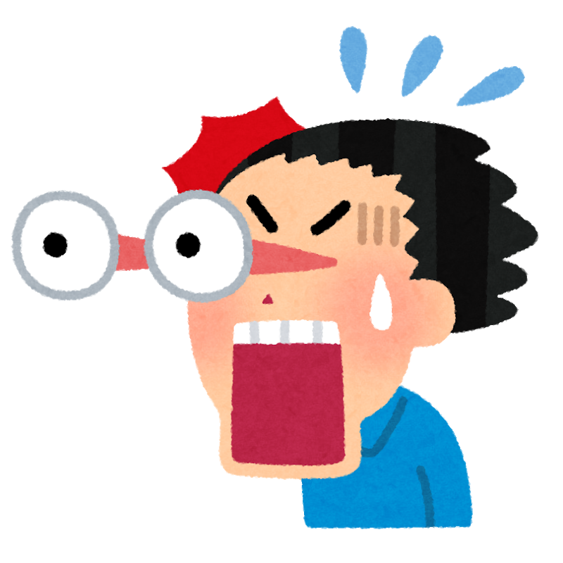

熱中症とは、高温多湿な環境に長時間いることで、体温調節 機能がうまく働かなくなり、体内に熱がこもった状態

- めまい
- 頭痛
- 大量の汗
- 筋肉痛
- こむら返り
- 生あくび
軽症
- 頭痛
- 嘔吐
- 倦怠感
- 脱力感
- 集中力の低下
中等症
- 意識障害
- けいれん

熱中症とは、高温多湿な環境に長時間いることで、体温調節 機能がうまく働かなくなり、体内に熱がこもった状態
 

① 涼しい場所へ避難させてください。
② 衣服を脱がせ、体を冷やしてください。
③ 水分・塩分を補給してください。
→意識が悪い。症状が改善しない。などが見られれば医療機関を受診しまし ょう。① 高温・多湿を避ける
② 強い日差しは避ける
③ こまめな水分補給

経口補水液は糖分が少なく塩分を多く含むのが特徴。脱水症状になったときに効率よくナトリウムと水分を補給することができるアイテムです。
ナトリウムが不足していると、体の中に水分を溜め込んでおくことができません。
脱水症状はナトリウムと水分が減ってしまっている状態なので、経口補水液で必要な水分を補いましょう。

暑い日は汗で多くの水分・塩分が失われます。
そんな時、重要なのはこまめな水分補給と塩分補給です。
塩分チャージタブレッツはそんな塩分をいつでもおいしく、すばやくチャージできるタブレットです。

冷感タオルは、濡らす・絞る・振る3ステップで簡単にひんやり感を得られるアイテムです。
冷感タオルの一部の商品には、濡らさずに触るだけで
ひんやりする接触冷感機能が付いているものもあります。
1枚持っておけば、暑い季節にマルチに活躍してくれるでしょう。

沖縄が世界に誇る乾燥梅干しのお菓子。
甘くて、すっぱいがクセになる美味しさで、
ハマる人が急増中。
クエン酸豊富なのでスポーツの後の疲労回復や、塩分が手軽に摂れて
熱中症対策として愛用しているアスリートもたくさんいます。
また、忙しいビジネスマンに、ちょっぴり甘いご褒美としても意外と人気です。
さらに禁煙のお供にも！
商号 株式会社上間菓子店
所在地 〒901-0225 沖縄県豊見城市字豊崎3-64
TEL：098-840-6000 FAX：098-840-6006
MAIL：info@amaume.co.jp